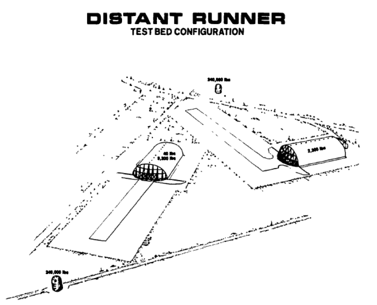
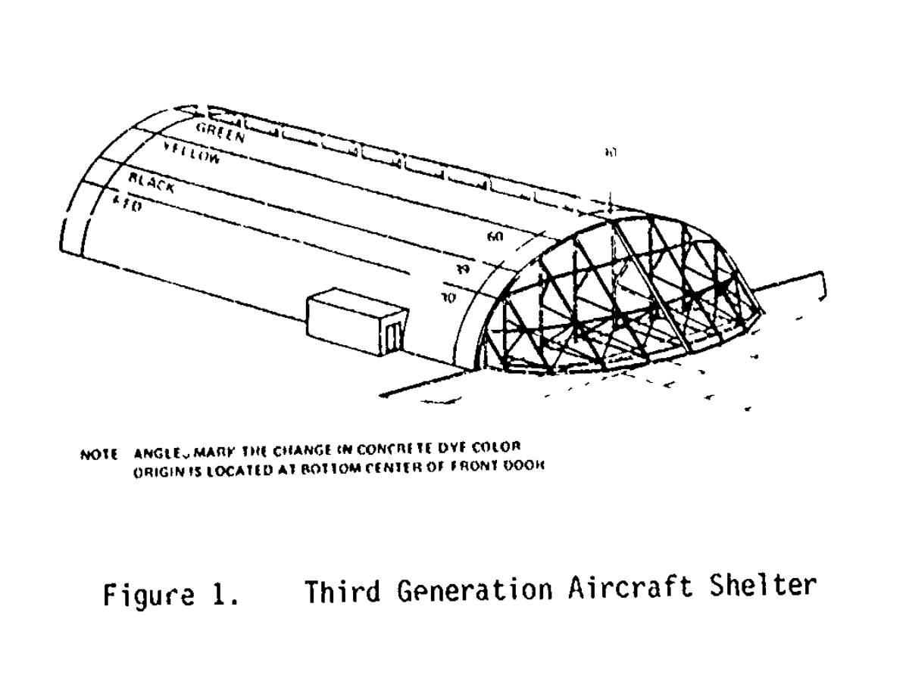
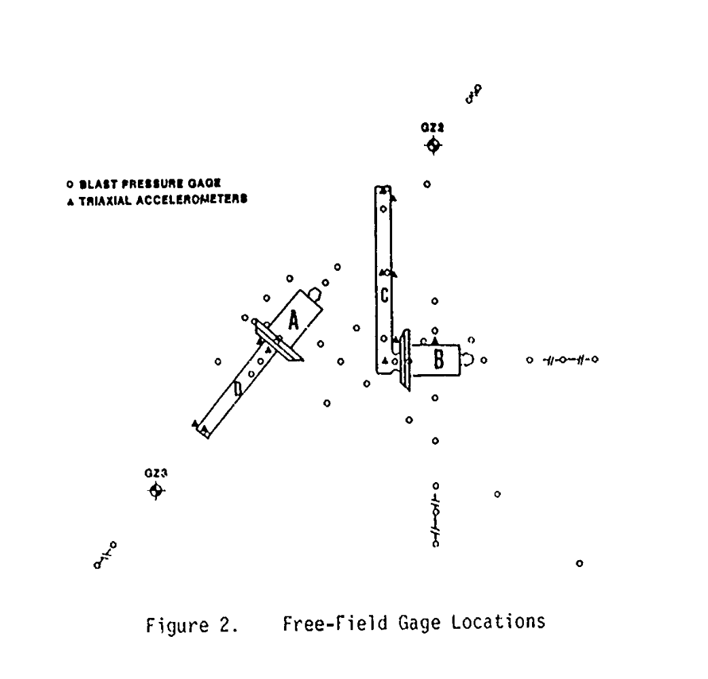
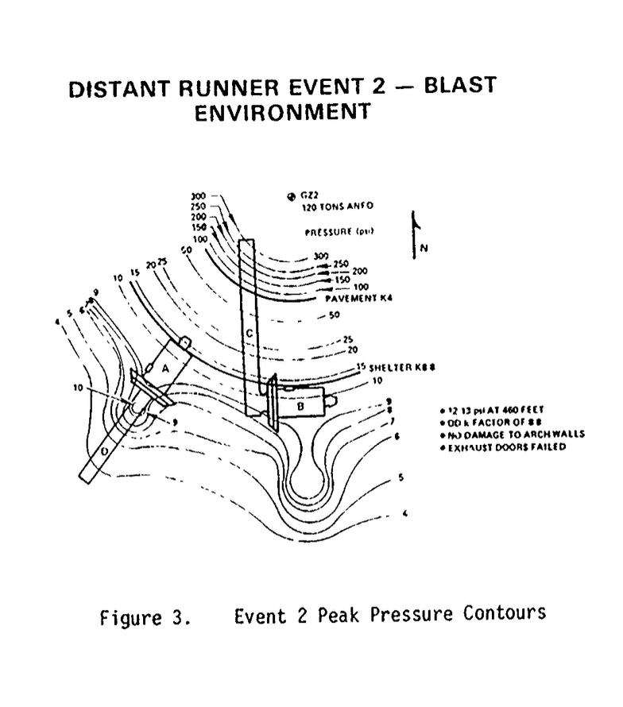
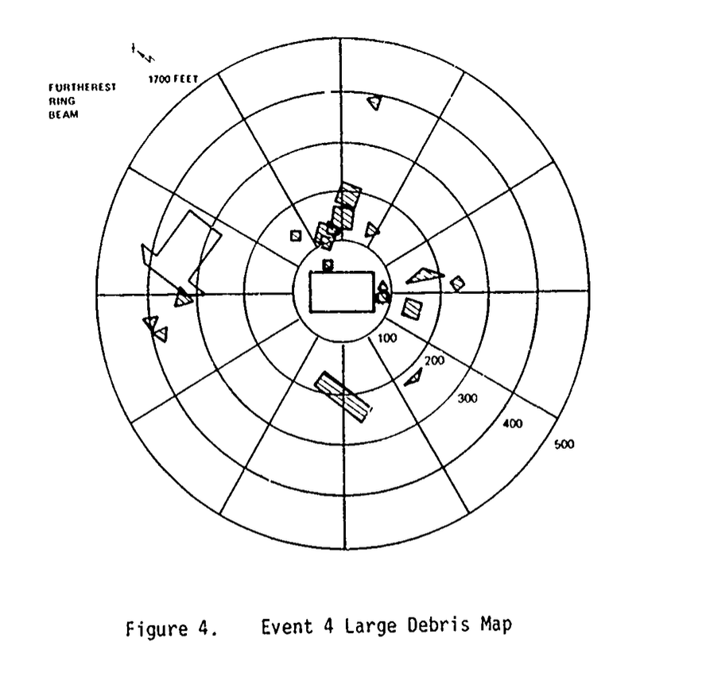
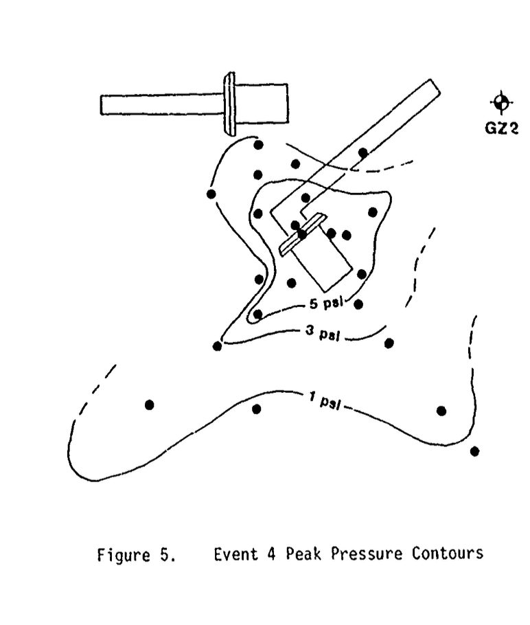
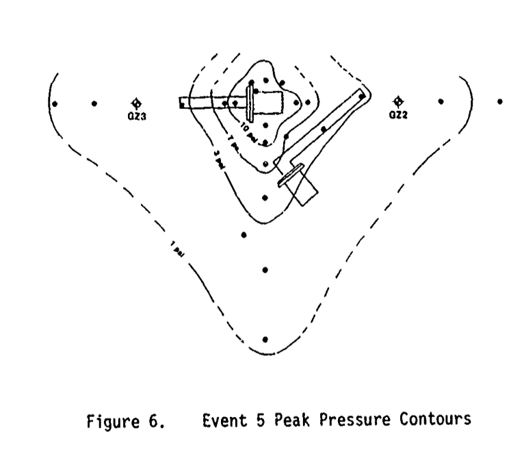
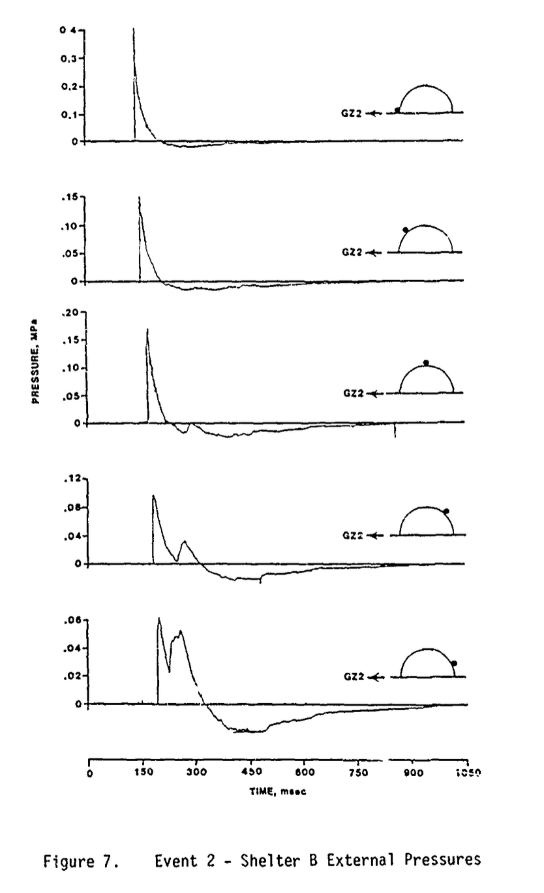
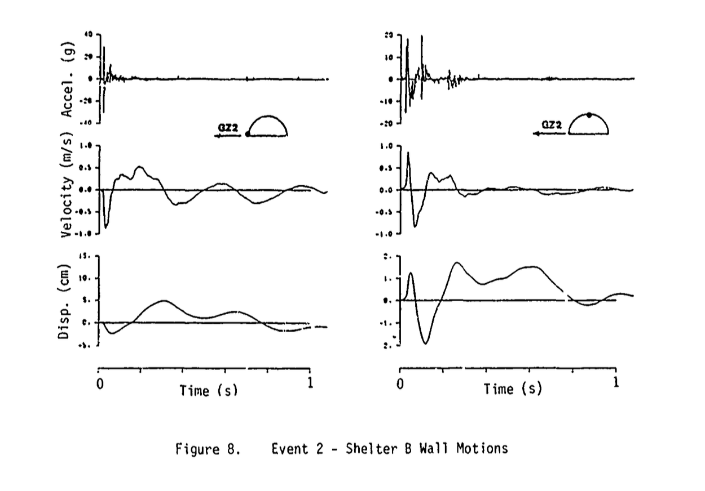
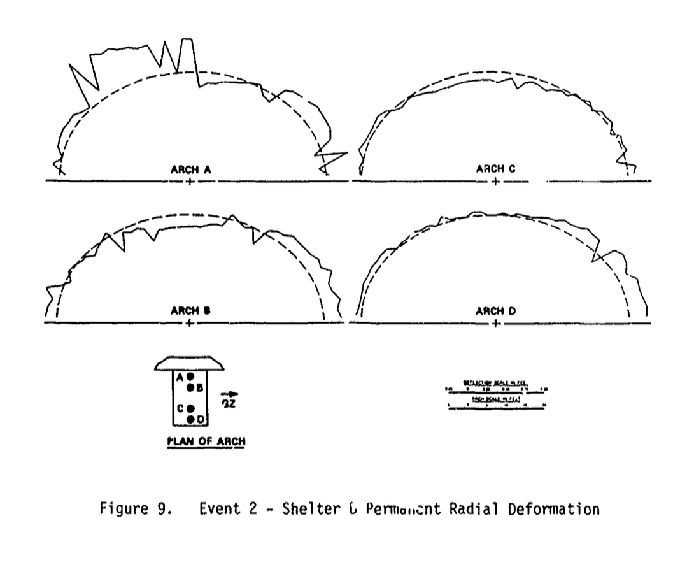

译文：加固机堡的高爆测试（1983）
作者：Ronald R. Bousek
美国空军中校
国防核能局（Defense Nuclear Agency）

摘要
本研究对两座与美军及北约在欧洲基地使用的第三代加固机堡相同规格的建筑，进行了五次高爆测试（代号「DISTANT RUNNER」）。测试目的是收集足够的实验数据，为国防部爆炸物安全委员会（DDESB）修订机堡内部及周边常规弹药存储的数量-距离（QD）安全标准提供依据。前两次测试在机堡外部引爆 120 吨 ANFO 炸药（铵油炸药），而后三次测试则在机堡内部引爆 AIM-9 导弹弹头和 Mark-82 航弹。
测试结果为 DDESB 降低部分 QD 安全标准提供了科学依据。同时获得了大量钢筋混凝土结构在动态载荷作用下的响应数据，为相关研究提供了宝贵资料。
引言
在欧洲，由于土地政策限制，美军与北约基地在布设飞机掩体和弹药库时往往面临着困难，而过于严格的安全标准会制约作战部署和战备水平的提升。为解决这一问题，国防核能局在 DDESB 的支持下开展了一系列高爆测试，旨在获取充分的实验数据，为降低现有的数量-距离（QD）安全标准提供科学依据。本测试于 1981 年 9 月至 11 月在白沙导弹靶场实施。
QD 标准由公式 D = K × W1/3 计算，其中：
- D 为安全距离
- W 为爆炸物重量
- K 为安全系数
此前的美军标准规定：
- 室外或掩体内军用飞机：K = 30 ft/lb1/3
- 弹药堆场至公共区域：K = 40 ft/lb1/3
值得注意的是，掩体内飞机的 QD 标准与露天停放完全相同。
本次测试的主要目标：
- 验证机堡的防护作用，从而证明对机堡内飞机适用的 QD 系数可以下调
- 证明此前适用于跑道区域的 QD 系数（18）可以大幅下调
- 评估第三代机堡在不同规模内部爆炸条件下，其对外传播冲击波与破片效应的响应特性
实验程序
机堡建设
研究团队在白沙靶场北部建设了两座与欧洲美军/北约基地使用的第三代加固机堡完全相同的建筑，仅在两方面有所调整：
- 省略了正面防爆门的电驱装置
- 适应当地的地质条件，适度加宽了地基
整个建设工期为 11 个月。
机堡采用拱形设计，墙体厚度约 2 英尺。为便于爆炸后识别碎片来源，内部混凝土采用了分色浇注工艺（参见图 1）。机堡前部设有两扇厚度 1 英尺、重量各为 100 吨的防爆门，掩体后部的排气口可以由两扇大型滑动门关闭。

传感器布置方案
机堡外部布置（参见图 2）：
- 44 个空气冲击波压力传感器
- 33 个三轴加速度计（用于测量地面振动）
每座机堡内部布置：
- 约 30 个爆炸压力传感器，用于记录内部压力环境；
- 约 10 余个双轴加速度计，用于测量结构的动态响应。
为了记录外部爆炸引起的机堡永久变形，采用被动应变测量方法，即通过测量机堡四根拱肋上各 50 个冲压标记点在实验前后的位置变化来进行评估。
此外，各次实验均使用高速摄像系统进行录影：布置 8 台空中摄影机以及 33 台地面摄影机，用于记录机堡的整体振动。
传感器数据由安装在实验区附近防护掩体内的数字编码系统进行采集。在掩体内完成放大、数字化和复用处理后，数据通过同轴电缆传输至距实验场约一英里的仪器，记录在磁带上。

外部爆炸实验
实验内容
DISTANT RUNNER 系列实验中的前两次外部爆炸实验均在机堡外部引爆 120 吨 ANFO 炸药堆。每座机堡内均放置一架退役的 F-111B 战斗机。
实验目标：
- 验证在 15 psi 外部超压作用下，机堡内部压力能够控制在 1.7 psi 以下
- 检验跑道区域在距起爆点 4 ft/lb1/3 缩放距离下的安全性
Event 2 测试配置：
- 机堡 B：侧面承受 15 psi 超压
- 机堡 A：后方承受 15 psi 超压
Event 3 测试配置：
- 机堡 A：正面承受 15 psi 超压
- 机堡 B：以 27° 角度承受 7 psi 超压
上述两次实验分别编号为 Event 2 和 Event 3（Event 1 原计划实验被重新安排至 Event 4 与 Event 5 之间进行，尽管实验顺序发生调整，原编号仍予以保留）。
Event 2 和 Event 3 测试结果
结构损伤情况：
混凝土拱体及后墙均未出现结构性损伤。
在后向承受爆炸作用的机堡中，两扇后部排气门在爆炸作用下被向内吹落。其中一扇被抛飞的排气门对机堡内 F-101B 战斗机尾部造成了显著损伤，而该机堡的前部大门未发生损伤。
在侧向承受爆炸作用的机堡中，一扇后部排气门同样被向内吹落，但未与机内飞机发生碰撞。前部门体的滚轮传动机构中，若干固定螺栓发生断裂，但门体仍保持在导轨内，未发生脱轨。
压力测量结果：
基于空气冲击波测量结果，两次外部爆炸实验均成功形成了名义为 15 psi 的外部超压环境（见图 3）。

机堡内部测得的压力值普遍低于 1.6 psi。仅在侧向受爆机堡前门附近的一个角落测点记录到超过 8 psi 的压力值。该高压区呈现出明显的高度局部化特征，并在距离该测点仅 20 英尺处即迅速衰减，未对相邻测点产生影响。
内部爆炸测试
实验内容
在完成 2 次外部爆炸试验后，又开展了 3 次内部爆炸试验。所采用的炸药类型及装药量列于表中：
Event 4
MARK-82 航弹：12 枚
Tritonal 炸药：2292 lb
C-4 炸药：30 lb
PETN 炸药：2 lb
Event 1
AIM-9 空空导弹：4 枚
HBX-1 炸药：42 lb
C-4 炸药：6 lb
PETN 炸药：0.6 lb
Event 5
MARK-82 航弹：48 枚
Tritonal 炸药：9168 lb
C-4 炸药：64 lb
PETN 炸药：9 lb
内部爆炸实验的主要目标包括：
- 评估机堡对爆炸冲击波的抑制能力
- 依据安全准则评估碎片的分布特征
- 观察机堡结构的毁伤模式
Event 4 测试结果
在 Event 4 中，机堡结构及机内飞机均被完全摧毁。高速摄像结果表明，拱体首先整体脱离地基，随后沿拱顶方向发生纵向断裂。其结果是，从正面观察，拱体右半部分整体被抛射至空中，并作为一个整体飞行了约 200 英尺。
拱体左半部分的破坏过程受到人员出入口的影响，结构解体方式有所不同。若干较大的拱体碎块落地距离约为 100–200 英尺。
机堡后部遭受了极为严重的破坏，但整体位移仅为数英尺。前部门体被直接向前抛射，飞行距离约 400 英尺。高速摄像显示，门体在飞行过程中发生了前后翻滚运动。其中一扇前门最终掉落在另一座机堡旁，对该机堡侧面造成了轻微的表面损伤。
对碎片的地面调查结果（见图 4）表明，约 90% 的碎片以较大块体形式分布在距机堡小于 250 英尺的范围内（前门除外）。飞行距离最远的碎片来源于拱体正面的金属环形梁。该梁的构件段被向前抛射，呈 180° 扇形分布，飞行距离约为 1000–1700 英尺。

机堡沿拱体—地基连接界面发生的初始破坏以及随后机堡的完全毁坏，与试验前计算结果一致。机堡对后向爆炸压力起到了一定的衰减作用，而对前向及侧向爆炸压力未表现出明显的衰减效果（见图 5）。

因此，对于内部爆炸条件下的弹药存储，目前尚无迹象表明可以降低数量—距离（QD）系数。
机堡未能在侧向对爆炸压力产生有效衰减，其原因可归因于沿地基部位发生的初始失效模式。通过加强拱体与地基之间的连接（钢筋），有可能使初始失效位置转移至拱顶，从而促使爆炸压力向上（而非侧向）泄放。
Event 1 测试结果
在 Event 1 中，4 枚 AIM-9 导弹战斗部被布置在距地面 2 英尺的高度，模拟其安装于飞机上的状态。机堡内未放置飞机。
爆炸发生后，两扇前门均匀地向外抛射约 20 英尺，未出现重大损伤。通常可能对门体运动形成约束的爆炸导流板，已在先前试验中从门体底部脱落，因此未对本次运动产生限制。
机堡结构未发生结构性损伤。所有破片均被机堡有效阻挡，尽管战斗部的底板穿透了后门并击中了排气口的后壁。人员出入口门未受损，且始终保持关闭状态。爆炸产生的空气冲击波得到了有效抑制。
Event 5（大规模内部爆炸）测试结果
在 Event 5 中，12 枚炸弹布置于一架 F-101B 飞机下方；另有 36 枚炸弹布置在飞机附近及机堡前部角落位置，以模拟武器存储工况。如预期所示，机堡结构被完全摧毁。
总体而言，碎片分布特征与 Event 4 相似，但碎片尺寸更小、飞行距离更远。前门构件的碎片被直接向前抛射，分布距离约为 400–1200 英尺。拱体被破碎成数个较大的块体，其落地距离约为 100–300 英尺；此外，大量较小碎块的飞行距离可达 1200 英尺。
机堡后部结构完全被破坏并夷平。前部环形梁的若干构件碎片在现场被发现，其分布距离与 Event 4 基本相当。尽管本次爆炸当量更大，这些构件并未被抛射至更远距离，其原因在于更大的爆炸作用力导致构件气动外形发生严重畸变，从而在飞行过程中产生更大的气动阻力。
爆炸超压测量结果（见图 6）表明，机堡在后向对爆炸超压产生了一定程度的抑制作用，在前向的抑制效果较弱，而在侧向方向未观察到明显的抑制效果。

因此，现行针对内部爆炸条件的空气冲击波数量—距离（QD）安全准则，并不具备下调条件。本次试验与 Event 4 所获得的碎片分布结果，将结合另一项重要安全风险：飞散碎片危害进行综合评估。
结论
DISTANT RUNNER 实验系列按预期完成，并成功实现了其主要目标，即通过实验验证部分数量—距离（QD）安全标准具备下调的可行性。
基于实验结果，美国国防部爆炸安全委员会（DDESB）已将飞机机堡附近弹药库的 QD 系数由 30 ft/lb1/3 下调至 5，并将靠近露天弹药存储区的飞机机堡 QD 系数调整为 8。同时，DDESB 已向北约 AC/258 分组推荐采用上述调整方案。
除主要目标外，本次实验还获取了大量可用于爆炸载荷下结构响应分析的技术数据。由于实验对象为全尺寸机堡结构，避免了尺度效应带来的不确定性。实验中对空气冲击波载荷及其引起的动态结构响应进行了对比测量，为评估动态结构建模方法提供了实验依据（见图 7、图 8）。


实验后的永久变形测量结果可用于建立和校核非弹性结构变形的建模方法（见图 9）。

此外，本次破坏性实验中对产生的大量碎片进行了系统收集与分析，数以千计的碎片样本被测量并称重，其数据可用于研究碎片尺寸分布特性及其作用范围。
DISTANT RUNNER 实验的具体实施过程及技术结果汇总见参考文献所列相关报告。
- DISTANT RUNNER Test Execution Report POR 7062，国防核能局，1982 年 1 月 29 日。
- Proceedings of the DISTANT RUNNER Symposium POR 7063，国防核能局，1982 年 9 月 2 日。
- DISTANT RUNNER Test Program Final Report 国防核能局，正在编制中。